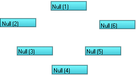

QuickParent is a
plug-in for Lightwave 6.0 or greater. It provides some alternate ways to
parent items to each other. It contains six plug-ins in total:
Chain Parent (First),
Chain Parent (Last),
Multi-Parent (First),
Multi-Parent (Last),
UnParent, and
About QuickParent.
All of these are fully compatable with Lightwave 6.5's Parent In Place feature.
This plug-in requires Lightwave 6.0 or greater.
To install QuickParent, just follow these steps:
- If any copies of Layout are running, quit them now.
- Create a new directory in your Lightwave Plugins directory called TMPro and copy QuickParent.p into it.
- Load Layout
- Select Add Plug-ins.
- Find and add QuickParent.p. Layout should report that two plug-ins have been added.
- Quit Layout. This will update your Lightwave
config and ensure that everything works properly.
- The next time you run Layout, you can launch
the QuickParent plug-ins from
the Generics pop-up in the Plug-in Options Panel, or assign them to keys
or buttons on the interface with Configure Keys and Configure Menus. Please
refer to your Lightwave documentation for more information. The plug-ins will be
the prefixed with TM_P under the Plugins heading of the
Configure Keys and Configure Menus panels.
QuickParent includes the following plugins:
Chain Parent (First)
Chain Parent (Last)
Chain Parent (First) and Chain Parent (Last)
parent the selected items to each other in the the order they were selected, or in reverse
order in the case of Chain Parent (Last). The root parent will be
the only selected object after it's finished. Since Layout will only allow you to mutli-select items
of the same type, the Chain Parent plug-ins can only be used to parent like items.

Multi-Parent (First)
Multi-Parent (Last)
Multi-Parent (First) and Multi-Parent (Last)
parent the selected items to the first or last selected item, respectivly. The root parent will be
the only selected object after it's finished. Since Layout will only allow you to mutli-select items
of the same type, the Multi-Parent plug-ins can only be used to parent like items.
UnParent
UnParent returns the selects items to their original, unparented states. Once finished,
all items will remain selected.
About QuickParent
About QuickParent is just here to remind you where you got these plug-ins from in the first place.
Bugs? Feature requests? Can't get it to work? Feel free to contact us if
you're having any problems or want to request a feature.
All programs presented here are Copyright ©2000-2001 TM Productions, All Rights Reserved.
Please contact us if you would like to distribute any of these programs,
or if you find any particularly useful.
|